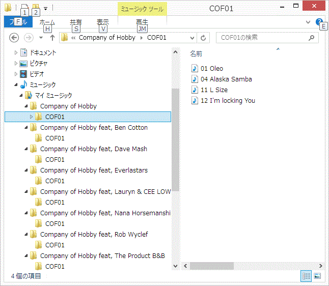
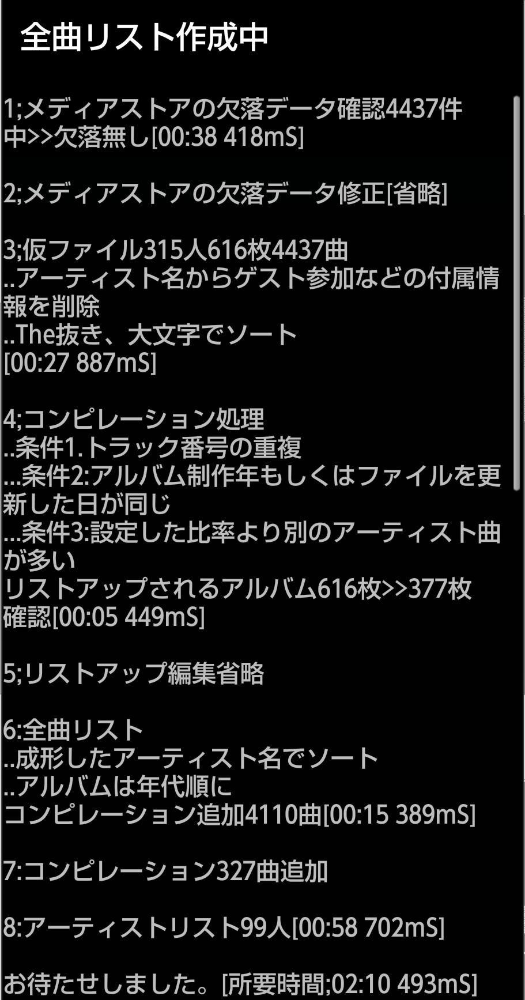

|
当たり前に使える音楽プレイヤー
MaraSongs |
全曲リスト
MaraSongsは同一アーティストのアルバム毎に止める事無く全曲再生を行う為に全曲リスト（独自のプレイリスト）を作成します。
通常のミュージックプレイヤーは |
音楽ファイルは通常、クレジットされているアーティスト名のフォルダの下に/アルバム名のフォルダ、 その下に各楽曲ファイルが並べられ、ミュージックプレイヤーもその並びに従って全曲再生を行います。
|

|
例えばゲスト参加などでアーティストフォルダが分けられると、その下に配置されたアルバム名フォルダも分割され、通常のミュージックプレイヤーでは一枚のアルバムとして連続再生されません。
また連続再生も分断されたアルバム単位で停止するプレイヤーが殆どです。 |
| リッピングに使うミュージックプレイヤーやファイルに書き込まれるタグ情報には表示される名用とは別に"アルバムアーティスト"などの名称でアルバムを分断させない名称で、管理されています。 |
しかしAndroidで音楽ファイルを管理するデータテーブル(MediaStore)にはその概念が無いので上記のような状態になります。
そこでMaraSongsではアルバムアーティスト(リストアップ用のアーティスト名)を設定した独自のデータベースを作成して妥当な並び順での全曲連続再生を実現します。
またデータベースをプレイリストとして使う事で任意のリストアップ順を設定する事もできます。
そこでMaraSongsではアルバムアーティスト(リストアップ用のアーティスト名)を設定した独自のデータベースを作成して妥当な並び順での全曲連続再生を実現します。
またデータベースをプレイリストとして使う事で任意のリストアップ順を設定する事もできます。
全曲リストが作られるタイミング |
|
MaraSongsが全曲リストを作るタイミングは3つ
|
|
*PCにUSB接続している時など、ユーザーが任意にメモリーを使っている時はアプリケーションからメモリーを認識できなくなります。 "全曲リスト"更新をご利用の際はUSBケーブルを外して下さい。 |
処理の概要 |
|
| 時間が掛かる処理なので、誤操作で起動した時は中断できる様、確認ダイアログ位を表示します。 | |
|
|

|